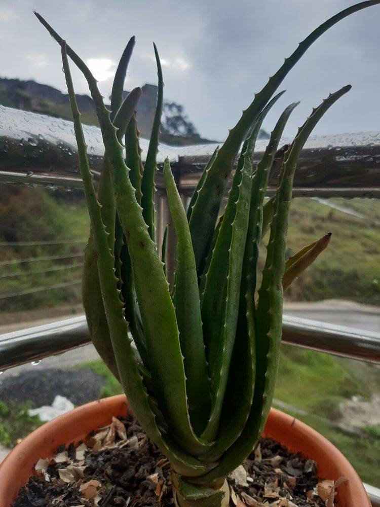

🌿 சித்த மருத்துவக் குறிப்பு:
கற்றாழைச் சோற்றை 7 முறை நன்கு கழுவி மஞ்சள் நிறக் கசப்புப் பால் நீக்கி, மோருடன் கலந்து அருந்தினால் உடல் சூடு தணியும் என்பது சித்தர் மரபு. (மஞ்சள் பால் வயிற்றுப்போக்கை உண்டாக்கும்; கர்ப்பிணிகள் தவிர்க்கவும்.)
🌵 கற்றாழை – உங்களுக்குத் தெரியுமா?
1நீர் சேமிக்கும் இலைகள்
தடித்த இலைகளில் நீரைச் சேமித்து வைப்பதால், மாதக்கணக்கில் தண்ணீர் இல்லாமலும் உயிர் வாழும்.
2தலைகீழாகத் தொங்கினாலும் வாழும்
வீட்டு வாசலில் திருஷ்டிக்காகக் கட்டித் தொங்கவிடும் கற்றாழை, மண்ணே இல்லாமல் பல மாதங்கள் பசுமையாக இருக்கும், சில சமயம் பூக்கவும் செய்யும்!
3அழகுக்கும் ஆரோக்கியத்துக்கும்
இதன் சோறு (Gel) தீக்காயம், வெயில் கருப்பு போன்றவற்றுக்குக் குளிர்ச்சி தரும். உலகெங்கும் அழகுசாதனப் பொருட்களில் முக்கியப் பொருள் இது.
இந்தத் தகவல் பயனுள்ளதாக இருந்ததா?